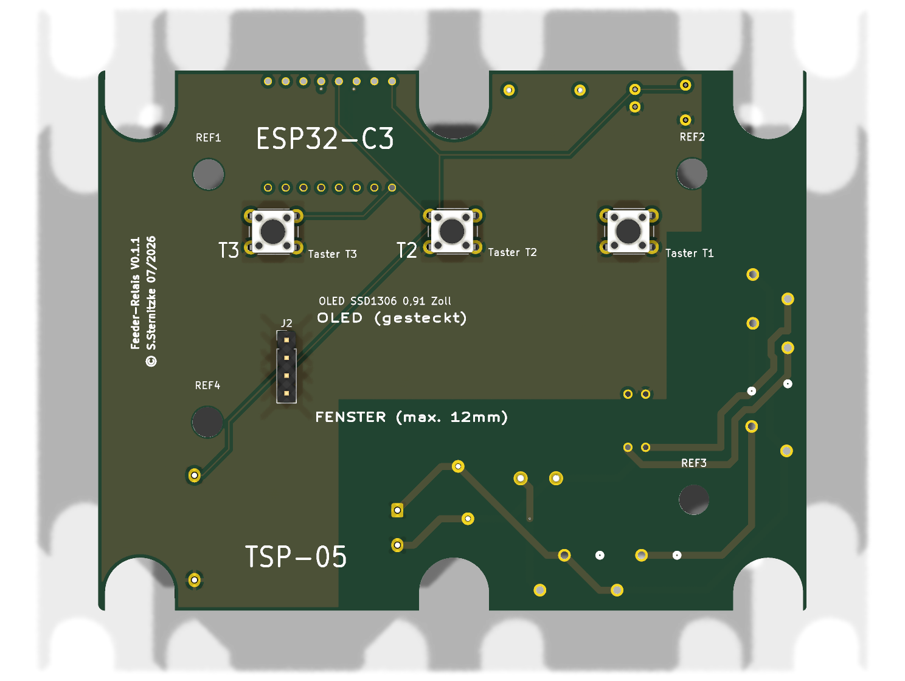
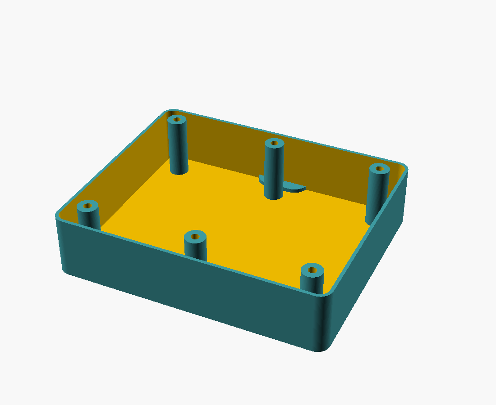
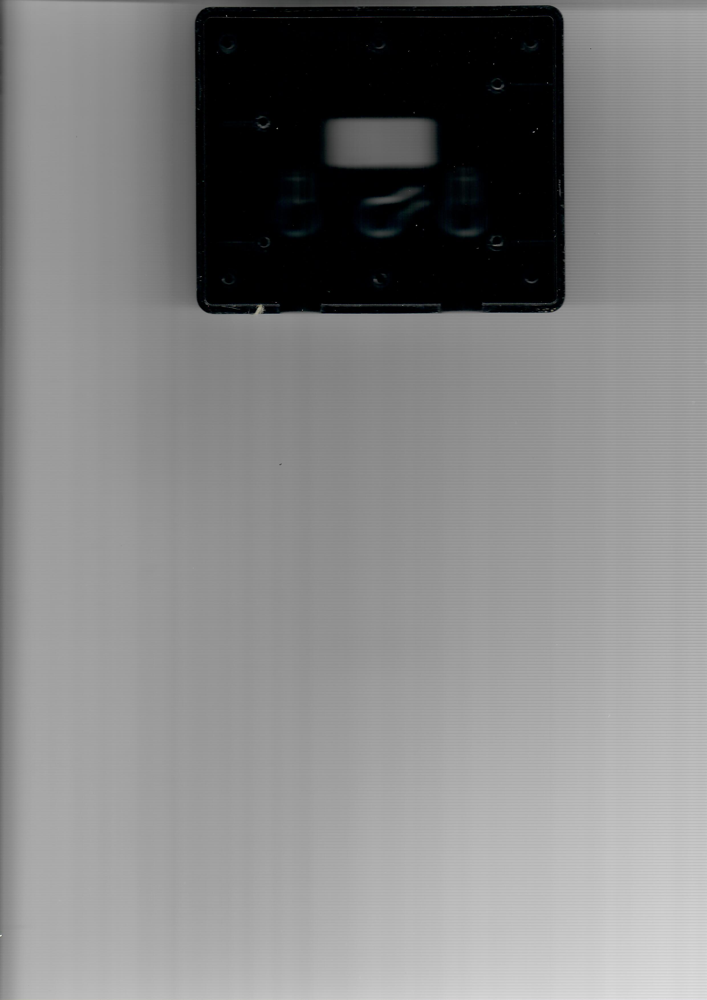
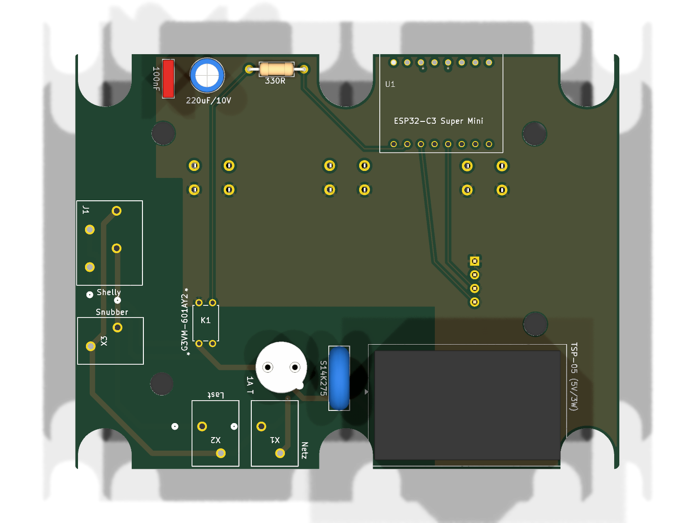
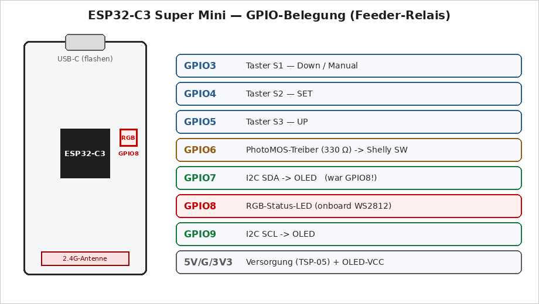
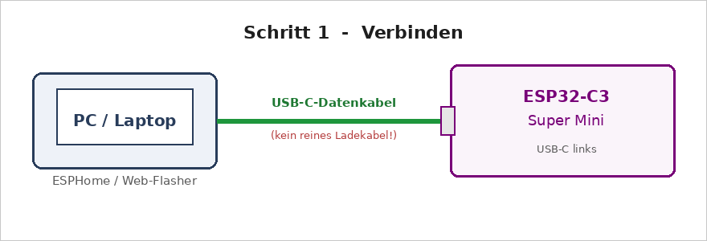
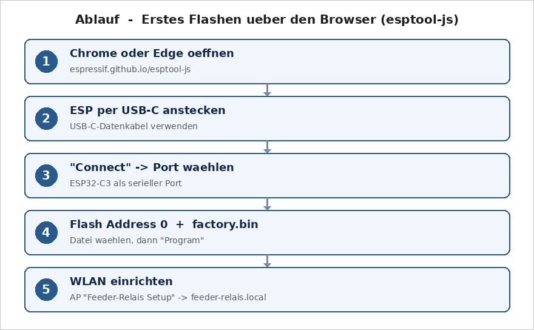

Dieses Handbuch richtet sich an Einsteigerinnen und Einsteiger. Du brauchst keine Elektronik-Ausbildung — aber einen Lötkolben, etwas Geduld und die Bereitschaft, ein paar Befehle in ein Terminal zu tippen. Jeder Schritt ist vollständig beschrieben: was du tust, warum du es tust, und woran du erkennst, dass es geklappt hat. Am Ende hältst du ein Gerät in der Hand, das eine 230-V-Last (zum Beispiel einen Futterautomaten) auf Knopfdruck für eine einstellbare Zeit einschaltet — bedienbar über drei Tasten, ein kleines Display und eine Webseite im Heimnetz.
Befehle für das Terminal sehen so aus — sie werden Zeile für Zeile eingegeben
und mit Enter abgeschickt. Zeilen, die mit # beginnen,
sind Kommentare und werden nicht mit eingetippt:
# Das ist ein Kommentar — nur zur Erklärung
esphome run firmware/timer-relais-c3.yaml
Verweise wie „Kapitel 7“ sind im PDF anklickbar. Über den Link „↑ Inhaltsverzeichnis“ am unteren Rand jeder Seite springst du jederzeit zurück zur Übersicht.
Das Feeder-Relais ist eine selbstgebaute Steuerplatine, die eine 230-Volt-Last auf Knopfdruck für eine einstellbare Zeit einschaltet und danach von allein wieder abschaltet. Der Name stammt aus dem ursprünglichen Einsatz: Sie ersetzt die defekte Zeitschaltplatine eines Futterautomaten (englisch feeder). Weil sie am Ende nur „einen Schalter für eine gewisse Zeit drückt“, taugt sie für jede Last, die man zeitgesteuert schalten möchte.
An der Frontseite sitzen drei Taster. Ein kurzer Druck schaltet die Last für eine hinterlegte Zeit ein:
| Taste | Beschriftung | Standardzeit | einstellbar |
|---|---|---|---|
| S1 | Down / Manual (T1) | 5 Sekunden | 1–600 s über WLAN |
| S2 | SET (T2) | 10 Sekunden | 1–600 s über WLAN |
| S3 | UP (T3) | 15 Sekunden | 1–600 s über WLAN |
Ein kleines OLED-Display hinter der Sichtscheibe zeigt oben den WLAN-Empfang, die große Uhrzeit (per Internet-Zeitserver gestellt) und den Status Ruhe; unten das Datum und den freien Speicher. Läuft ein Timer, steht in der Mitte der Sekunden-Countdown und rechts Futter.
Die Bedienung läuft ohne App und ohne Cloud über eine kleine,
für Handys optimierte Webseite, die der ESP32 selbst bereitstellt (im Browser
http://feeder-relais.local): Timer auslösen, Zeiten einstellen,
Netzwerk- und Statuswerte ansehen. Für die Anbindung an eine Hausautomatisierung
(zum Beispiel ioBroker oder Home Assistant) gibt es zusätzlich eine schlanke
JSON-Schnittstelle (Kapitel 11).
Vom Tastendruck bis zur geschalteten Last durchläuft das Signal fünf Stationen. Jede hat genau eine Aufgabe:
Taste ─► ESP32-C3 ─► 330 Ω ─► PhotoMOS ─► Shelly 1PM ─► Last
S1–S3 zählt die begrenzt schaltet schaltet und (Pumpe,
Zeit, malt den LED- galvanisch misst die Futter-
das OLED Strom getrennt 230-V-Last motor …)
Dieses Handbuch beschreibt die Version 2 der Platine. Gegenüber der ersten Version hat sich der Aufbau deutlich vereinfacht:
Zwischen zwei Kupferflächen auf einer Platine kann Strom nicht nur durch die Luft überspringen, sondern auch an der Oberfläche entlang kriechen — begünstigt durch Staub, Feuchte und Schmutz. Diese „Kriechstrecke“ muss bei 230 Volt groß genug sein. Wir legen sie auf 6 mm fest; das ist großzügig und lässt Reserve. Die einzige erlaubte Ausnahme ist das Innere des PhotoMOS-Relais selbst — dieses Bauteil ist die zertifizierte Trennstelle und darf Netz- und Kleinspannung auf wenigen Millimetern führen (Kapitel 6).
Die Reihenfolge in diesem Handbuch ist bewusst so gewählt, dass du alles Gefährliche zuletzt tust und bis dahin gefahrlos üben kannst:
| Bauteil | Aufgabe |
|---|---|
| ESP32-C3 Super Mini | Das „Gehirn“. Ein kleiner Mikrocontroller mit WLAN. Er liest die Taster, zählt die Zeit, malt das OLED, stellt die Webseite bereit und steuert den PhotoMOS an. Versorgt mit 5 V, arbeitet intern mit 3,3 V. |
| PhotoMOS-Relais | Die galvanische Trennstelle zwischen 3,3 V und 230 V. Details in Abschnitt 3.3. |
| Vorwiderstand 330 Ω | Begrenzt den Strom durch die interne LED des PhotoMOS, damit sie nicht überlastet wird. |
| Netzteil (AC/DC-Modul) | Macht aus 230 V~ die 5 V, mit denen der ESP läuft. Ein fertiges, gekapseltes Modul. |
| Shelly 1PM Mini Gen4 | Schaltet die eigentliche Last, misst die Leistung und ist zusätzlich per WLAN erreichbar. Sitzt außerhalb der Platine. |
| OLED-Display 0,91" | Zeigt Uhr, Countdown und Status. Wird nur aufgesteckt, nicht verlötet. |
| Sicherung + Varistor | Schützen vor Überstrom und Überspannung auf der Netzseite. |
Der Shelly 1PM Mini Gen4 ist ein fertiges, geprüftes Schaltrelais mit Leistungsmessung. Ihn zu verwenden hat drei Vorteile: Das riskante Schalten der Last übernimmt ein zertifiziertes Fertigprodukt; die Leistung wird gemessen (man sieht, ob die Last wirklich läuft); und der Shelly ist selbst per WLAN erreichbar, falls man ihn zusätzlich einbinden will.
Unsere Platine „drückt“ für den Shelly nur den Schalter — als echtes Hardware-Signal, ohne WLAN-Abhängigkeit für die Kernfunktion. In Version 2 sitzt der Shelly außerhalb der Platine und wird über eine Klemme verbunden (Kapitel 13). Das hält die Platine klein, die 230-V-Wege kurz und den Aufbau übersichtlich.
Ein PhotoMOS ist ein winziges Halbleiter-Relais. Auf der einen Seite sitzt eine LED, die der ESP mit 3,3 V ansteuert. Auf der anderen Seite ein lichtgesteuerter Schalter, der Netzspannung schalten darf. Dazwischen liegt nur Licht — also eine vollständige galvanische Trennung zwischen Kleinspannung und 230 V.
Der Schalteingang des Shelly ist netzspannungsbezogen (er erwartet geschaltetes L). Deshalb muss der PhotoMOS ≥ 400 V Sperrspannung aushalten — zum Beispiel ein Omron G3VM-601BY oder ein Panasonic AQY216.
Hier die genaue Funktion jedes Bauteils — mit den Werten, die auf der v2-Platine tatsächlich verbaut sind. Die Kennungen (Referenzbezeichner) stehen so auf dem Bestückungsdruck der Platine.
| Kennung | Wert | Genaue Funktion |
|---|---|---|
| U1 | ESP32-C3 Super Mini | Der Mikrocontroller mit WLAN. Läuft mit 5 V, erzeugt intern über einen Regler 3,3 V (auch für das OLED). Trägt eine Onboard-RGB-LED (WS2812) auf GPIO8. Steuert Taster, OLED, PhotoMOS und die Weboberfläche. |
| K1 | G3VM-601AY2 | Der PhotoMOS — die galvanische Trennung zwischen 3,3 V und 230 V. Pins 1/2 = interne LED (Pin 1 über R1 von GPIO6, Pin 2 an GND), Pins 3/4 = lichtgesteuerter Schalter (Pin 3 = L_F, Pin 4 = SW_SHELLY). Sperrspannung ≥ 400 V. |
| R1 | 330 Ω | Vorwiderstand der K1-LED. Aus ~3,3 V minus ~1,2 V LED-Flussspannung fließen rund 6 mA — genug zum sicheren Schalten, weit unter dem Grenzwert der LED. |
| PS1 | TSP-05 (5 V / 3 W) | Das Netzteil: macht aus 230 V~ (L_F + N) die 5 V/GND für den ESP. 3 W = 600 mA — genug für die WLAN-Sendespitzen (~350 mA) plus OLED. |
| C1 | 220 µF / 10 V | Stützkondensator an +5 V: puffert kurze Stromspitzen beim WLAN-Senden und verhindert den Spannungseinbruch, der den ESP sonst neu starten würde. |
| C2 | 100 nF | Abblockkondensator direkt an +5 V/GND: schluckt hochfrequente Störungen nahe am Chip. |
| F1 | 1 A träge | Feinsicherung (5×20 mm) in Reihe: X1 (L_IN) → F1 → L_F. Schützt bei Kurzschluss/Überstrom. „Träge“, damit der Einschaltstrom des Netzteils nicht fälschlich auslöst. |
| RV1 | S14K275 (Varistor) | Überspannungsschutz parallel zwischen L_F und N: begrenzt Spannungsspitzen (Schalttransienten, Netzstörungen) und schützt Netzteil und Elektronik. |
| J2 | OLED SSD1306 128×32 | Das Display. I²C-Adresse 0x3C, 400 kHz. Wird nur aufgesteckt (Belegung GND/VCC/SCL/SDA). |
| SW1–3 | Taster 6×6 mm | Die drei Kurzhubtaster T1/T2/T3. Ein Anschluss an GND, der andere an GPIO3/4/5 — der ESP nutzt interne Pull-ups, ein Druck zieht den Pin auf GND. |
Und die Anschlussklemmen am Rand der Platine:
| Kennung | Anschluss | Belegung |
|---|---|---|
| X1 | Netzeingang | 1 = N, 2 = L_IN (230 V herein) |
| X2 | Lastabgang | 1 = O (geschaltet), 2 = N |
| X3 | Snubber | 1 = O, 2 = N — für ein optionales RC-Glied bei induktiven Lasten |
| J1 | Shelly | 1 = SW, 2 = O, 3 = L, 4 = N (zum externen Shelly, Kapitel 13) |
Alles, was du für ein Feeder-Relais brauchst. Die Platine selbst lässt du fertigen (Kapitel 7); die Bauteile werden bestellt und aufgelötet (Kapitel 9).
| Kennung | Bauteil | Wert / Typ | Bemerkung |
|---|---|---|---|
| U1 | ESP32-C3 Super Mini | 18 × 24 mm, USB-C | Controller mit WLAN |
| K1 | PhotoMOS-Relais | Omron G3VM-601AY2 (o. -601BY / Panasonic AQY216) | ≥ 400 V! |
| PS1 | AC/DC-Netzteilmodul | 5 V / 3 W (HLK-PM05-Klasse) | Pinabstände nachmessen |
| — | OLED-Display | 0,91" SSD1306, 128 × 32, I²C | Pins: GND VCC SCL SDA, Adresse 0x3C |
| SW1–3 | Kurzhubtaster | 6 × 6 mm, Hub 1,5 mm | Position ist fix (Frontplatte) |
| R1 | Widerstand | 330 Ω | LED-Vorwiderstand PhotoMOS |
| F1 | Feinsicherung + Halter | 1 A träge, 5 × 20 mm | primärseitig, Pflicht |
| RV1 | Varistor | S14K275 | primärseitig, Pflicht |
| C1 / C2 | Kondensatoren | 220 µF/10 V & 100 nF | 5-V-Puffer und Abblockung |
| X1 | Netzeingang | 2-polig (L, N) | Schraubklemme, 230 V herein |
| X2 | Lastabgang | 2-polig (O, N) | zur geschalteten Last |
| X3 | Snubber | 2-polig (O, N) | optionales RC-Glied für induktive Lasten |
| J1 | Shelly-Anschluss | 4-polig (SW, O, L, N) | kurze Litzen zum externen Shelly, Kapitel 13 |
| J2 | OLED-Buchsenleiste | 1 × 4, RM 2,54 | GND/VCC/SCL/SDA, Display wird aufgesteckt |
Das Gehäuse besteht aus zwei Teilen: dem Vorderteil (die originale Frontplatte mit Sichtfenster und den drei Tast-Stößeln) und dem Rückteil, das du selbst in 3D druckst. Die Platine wird von hinten an sechs Dome geschraubt, das Display sitzt hinter der Sichtscheibe.

Das Vorderteil ist das Originalgehäuse-Oberteil. Es trägt das Sichtfenster (dahinter liegt das OLED) und die Stößel, die beim Drücken die drei Taster auf der Platine betätigen. Deshalb ist die Position der Taster nicht verhandelbar — sie müssen exakt unter den Stößeln sitzen (Kapitel 9).

Das Rückteil ist in Version 2 bewusst tiefer als das Original (35 mm statt der ursprünglichen 5,7 mm), damit Platine und der externe Shelly bequem hineinpassen. An der Oberkante sitzt eine Aufhängelasche mit Schlüsselloch für die Wandmontage.
Die Vorlage liegt als OpenSCAD-Datei im Projekt unter
box/feeder_back.scad. OpenSCAD ist ein kostenloses Programm, das ein
3D-Modell aus einer Textdatei erzeugt — der Vorteil: alle Maße stehen als
Variablen ganz oben in der Datei und lassen sich anpassen.
box/feeder_back.scad laden.box/feeder_back_35mm.stl.box/Timer-Ersatzplatine-v2-BOARD.stl —
ein 1:1-Abbild der Platine (Umriss, Schraublöcher, Schlitze). Drucke es flach und
lege es ins Rückteil, bevor du die echte Platine bestellst. So
prüfst du gefahrlos, ob alles passt (Kapitel 7).Die Platine wird von hinten mit sechs Schrauben an die Dome des Rückteils geschraubt (Domraster 45 mm × 70 mm, Schraubloch 3,2 mm, Senkung für den Schraubenkopf auf der Rückseite). Vier weitere Punkte an der Frontplatte zentrieren die Platine zusätzlich.
| Maß | Wert |
|---|---|
| Außenmaß Rückteil | 109,8 × 90,8 mm |
| Tiefe Rückteil (v2) | 35 mm |
| Wand- und Bodenstärke | 1,3 mm |
| Platinenmaß | 101,6 × 77,5 mm |
| Domraster | 45 mm (X) × 70 mm (Y) |
Du musst die Platine nicht selbst entwerfen — sie liegt fertig im Projekt unter
kicad-v2/. Dieses Kapitel erklärt, wie sie aufgebaut ist,
damit du beim Bestücken und Prüfen weißt, was wohin gehört. Wer selbst etwas
ändern möchte, findet die KiCad-Anleitung in Kapitel 8.
In Version 2 liegt die gesamte Elektronik auf der Rückseite. Auf der Vorderseite (zur Frontplatte hin) bleiben nur die drei Taster und die OLED-Buchse — alles, was bedient oder gesehen wird.

Die Platine hat vier Kupferlagen: die beiden Außenlagen (Vorder- und Rückseite) tragen die Leiterbahnen, die beiden Innenlagen sind durchgehende Masseflächen im Kleinspannungsbereich. Solche Masseflächen wirken wie eine ruhige Bezugsebene: Sie machen den Aufbau störungsarm und die WLAN-Funktion stabil.
Die fünf Netze L_IN, L_F, N,
SW_SHELLY und O_LAST führen 230 Volt. Sie sind in
einer eigenen Netzklasse „230V“ zusammengefasst (breitere
Leiterbahnen, größere Abstände) und liegen alle unten links, weit weg von der
Elektronik. Eine im Entwurf hinterlegte Prüfregel verlangt 6 mm
Abstand zwischen jedem 230-V-Netz und jeder Kleinspannung.
Die einzige Ausnahme ist das PhotoMOS-Relais K1: Sein Gehäuse ist die zertifizierte Trennstelle (Pins 1/2 = Kleinspannung, Pins 3/4 = Netzspannung). Nur dort dürfen sich beide Welten auf wenigen Millimetern begegnen — genau dafür ist das Bauteil gebaut.
Welche Leitung was führt, zeigt die folgende Übersicht:
| Netzname | führt | verbindet |
|---|---|---|
| L_IN | 230 V (ungesichert) | Netzeingang X1 → Sicherung F1 |
| L_F | 230 V (abgesichert) | F1 → Varistor RV1, Netzteil PS1, PhotoMOS K1.3, Shelly J1.L |
| N | 230 V Neutral | X1 → RV1, PS1, Shelly J1.N, Last X2, Snubber X3 |
| SW_SHELLY | 230 V geschaltet | PhotoMOS K1.4 → Shelly J1.SW |
| O_LAST | 230 V geschaltet | Shelly J1.O → Lastabgang X2 + Snubber X3 |
| +5V | Kleinspannung | Netzteil → ESP 5V, C1, C2 |
| GND | Kleinspannung | Masse: ESP, Taster, PhotoMOS, OLED |
| +3V3 | Kleinspannung | ESP-3V3-Ausgang → OLED |
Der ESP32-C3 nutzt diese Pins:

| Pin | Funktion |
|---|---|
| 5V / G | Versorgung vom Netzteil |
| 3V3 | versorgt das OLED |
| GPIO3 / 4 / 5 | Taster T1 / T2 / T3 |
| GPIO6 | PhotoMOS-Treiber (über 330 Ω) |
| GPIO7 | I²C-SDA (OLED) |
| GPIO8 | Onboard-RGB-LED (Status) |
| GPIO9 | I²C-SCL (OLED) |
Diese Tabelle ist der verbindliche Abgleich zwischen Platine und
Firmware. Links steht, was die Firmware (timer-relais-c3.yaml)
mit dem Pin macht — mit ihrer genauen Konfiguration; rechts, wohin die Platine ihn
führt. Beide Seiten müssen exakt übereinstimmen, sonst funktioniert das Gerät nicht.
| ESP-Pin | Firmware (ID & Konfiguration) | Platine | Funktion im Detail |
|---|---|---|---|
| GPIO3 | btn_s1 · Eingang, interner Pull-up, invertiert, 30 ms Entprellung | Pad 3 → /BTN1 → Taster S1 nach GND | Taster S1 (Down/Manual). Ruhepegel HIGH; Druck zieht auf GND (LOW) → gilt als „gedrückt“. Kurz = Timer 1 auslösen. |
| GPIO4 | btn_s2 · Eingang, Pull-up, invertiert, 30 ms | Pad 4 → /BTN2 → Taster S2 nach GND | Taster S2 (SET). Kurz = Timer 2; lang ≥ 3 s = Info-Menü. |
| GPIO5 | btn_s3 · Eingang, Pull-up, invertiert, 30 ms | Pad 5 → /BTN3 → Taster S3 nach GND | Taster S3 (UP). Kurz = Timer 3; lang ≥ 1,2 s = alles stoppen. |
| GPIO6 | shelly_trigger · GPIO-Ausgang | Pad 6 → /PMOS_DRV → R1 330 Ω → K1-LED-Anode | Steuert den PhotoMOS. HIGH = LED an = PhotoMOS leitet = Shelly-SW bekommt L → Last ein. LOW = aus. |
| GPIO7 | i2c: sda · 400 kHz | Pad 7 → /SDA → OLED J2.4 | I²C-Datenleitung zum OLED. Liegt bewusst auf GPIO7 (nicht GPIO8). |
| GPIO8 | status_led · WS2812 (GRB), gedimmt | modulintern — kein Netz auf der Platine (Pad 8 frei) | Onboard-RGB-Status-LED (Ampel grün/gelb/rot). Sie sitzt fest auf GPIO8 des Moduls; deshalb darf hier kein zweites Signal liegen — der Grund, warum SDA auf GPIO7 wanderte. |
| GPIO9 | i2c: scl · 400 kHz | Pad 9 → /SCL → OLED J2.3 | I²C-Taktleitung zum OLED (Adresse 0x3C). |
| 5V / GND | Versorgung des Moduls | /+5V / GND vom Netzteil | 5 V aus dem AC/DC-Modul; GND ist die gemeinsame Masse (auch die Innenlagen). |
| 3V3 | Ausgang des Onboard-Reglers | /+3V3 → OLED-VCC | Der ESP erzeugt intern 3,3 V und versorgt damit das OLED. |
Eine vierlagige Platine baut man nicht zu Hause — man lässt sie bei einem Leiterplattenhersteller fertigen. Das ist heute günstig und einfach: Man lädt eine Handvoll Dateien hoch und bekommt die fertigen Platinen per Post.
box/Timer-Ersatzplatine-v2-BOARD.stl 1:1 auf dem 3D-Drucker (flach,
ohne Stützen) und lege sie ins gedruckte Rückteil. Passt der Umriss, fluchten die
sechs Schlitze mit den Domen, sitzen die Schraublöcher? Diese fünf Minuten
ersparen dir eine teure Fehlbestellung.Alternativ (oder zusätzlich) druckst du den Platinen-Umriss auf Papier im Maßstab 1:1 und schneidest ihn aus.
„Gerber“ ist das Standard-Dateiformat, in dem Hersteller Platinen erwarten — je eine Datei pro Lage, plus die Bohrdaten. Die fertigen Gerber liegen bereits im Projekt; erzeugen kannst du sie aus KiCad so:
kicad-v2/Timer-Ersatzplatine-v2.kicad_pcb in KiCad
öffnen.Lade das ZIP bei einem Anbieter wie JLCPCB, PCBWay oder Aisler hoch. Wichtige Einstellungen:
| Einstellung | Wert |
|---|---|
| Lagen | 4 |
| Materialstärke | 1,6 mm (Standard) |
| Oberfläche | HASL bleifrei oder ENIG |
| Kupfer | 1 oz (35 µm) |
| Farbe | egal |
Dieses Kapitel brauchst du nur, wenn du die Platine selbst verändern willst. Zum reinen Nachbauen kannst du es überspringen — die fertigen Fertigungsdaten liegen bei. KiCad ist ein kostenloses Programm zum Platinen-Entwurf (getestet mit KiCad 8/9/10; Menünamen können minimal abweichen).
kicad-v2/Timer-Ersatzplatine-v2.kicad_pro öffnen.Jedes Bauteil-Symbol ist mit einem Footprint verknüpft — dem Lötbild auf der Platine. Prüfe unter Werkzeuge → Footprints zuweisen, dass zum Beispiel PS1 zum wirklich gekauften Netzteil passt (Pinabstände nachmessen!) und der PhotoMOS zur SMD- oder DIP-Bauform.
Die Netzklassen stehen in der Projektdatei und dürfen nicht verändert werden: Default (0,2 mm Abstand und Bahnbreite) und 230V (1,0 mm Abstand und Bahnbreite) mit den fünf Netzen L_IN, L_F, N, SW_SHELLY, O_LAST.
Die Kriechstrecken-Regel steht als eigene Datei
Timer-Ersatzplatine-v2.kicad_dru im Projekt. Sie verlangt zwischen
230 V und Kleinspannung 6 mm — mit der bewussten Ausnahme des PhotoMOS
K1:
(version 1)
(rule "230V->SELV 6mm (K1-Barriere ausgenommen)"
(condition "... 230-V-Netz gegen Nicht-230-V-Netz,
K1 ausgenommen ...")
(constraint creepage (min 6mm))
(constraint clearance (min 6mm)))
Nach jeder Änderung den DRC (Design Rules Check, Prüfen → Design-Regeln prüfen) laufen lassen, bis er fehlerfrei ist.
Sind DRC und Sichtprüfung (3D-Ansicht mit Alt+3) in Ordnung, exportierst du Gerber- und Bohrdaten wie in Kapitel 7 beschrieben.
„Bestücken“ heißt: die Bauteile auf die Platine löten. Wir gehen von den flachen zu den hohen Teilen vor — so liegt die Platine beim Löten immer stabil auf.
Empfohlene Reihenfolge: R1 → C2 → PhotoMOS → Taster → OLED-Buchse J4 → C1 → Sicherungshalter F1 → Varistor RV1 → Klemmen. Der ESP kommt erst, wenn er geflasht und getestet ist (Kapitel 10 und 14).
Der PhotoMOS ist (je nach Typ) ein kleines SMD-Bauteil. So lötest du es sauber:
Die „Firmware“ ist das Programm, das auf dem ESP läuft. Beim allerersten Mal kommt sie per USB-Kabel auf den Chip. Alle späteren Updates laufen dann drahtlos (Kapitel 15).

firmware/build/:
feeder-relais.factory.bin für den Erstflash und
feeder-relais.ota.bin für spätere Web-Updates. Sie enthalten
keine WLAN-Zugangsdaten — die richtest du nach dem Flashen ein
(Kapitel 11).ESPHome ist das Werkzeug, mit dem die Firmware gebaut und aufgespielt wird.
Eine secrets.yaml ist nicht nötig — es werden keine WLAN-Daten
einkompiliert.
esphome run firmware/timer-relais-c3.yaml
/dev/ttyACM0, Windows ein COMx) und flasht./dev/ttyACM0 verweigert wird, deinen Benutzer in
die Gruppe dialout aufnehmen und neu anmelden:
sudo usermod -aG dialout $USER
Für die fertige feeder-relais.factory.bin ganz ohne Installation:

https://espressif.github.io/esptool-js/ öffnen.115200 lassen, Connect klicken und den
seriellen Port des ESP wählen.0 eintragen, mit
Choose File die feeder-relais.factory.bin wählen, dann
Program. Warten, bis „Hard resetting…“ erscheint.| Symptom | Ursache / Lösung |
|---|---|
| ESP wird gar nicht erkannt | Ladekabel statt Datenkabel → anderes USB-C-Kabel, anderer Port |
| Kein Port im Browser | Chrome/Edge nutzen; unter Windows ggf. Treiber (CH340/CP210x) |
| „Connect“ schlägt fehl | Boot-Modus: BOOT halten + RESET tippen + BOOT loslassen, dann erneut verbinden |
Kein ….local danach | erst WLAN einrichten (Kapitel 11); mDNS braucht einen Moment |
Die Firmware bringt absichtlich keine WLAN-Zugangsdaten mit. Nach dem Flashen öffnet der ESP einen eigenen Hotspot:
feeder1234).http://192.168.4.1
aufrufen).http://feeder-relais.local.http://feeder-relais.local öffnet eine mobile Web-App mit fünf
Reitern:
In der Kopfzeile steht ein Statuspunkt: grün = alles in Ordnung, gelb = ein Timer läuft, rot = Störung im Ruhezustand (z. B. OLED nicht erreichbar oder kein WLAN). Dieselbe Ampel zeigt am Gerät die gedimmte Onboard-RGB-LED.
Für die Hausautomatisierung bietet der ESP eine JSON-Schnittstelle. Die wichtigsten Endpunkte:
| Aufruf | Wirkung |
|---|---|
GET /api/status | alle Werte als JSON (aktiv, Restzeit, Relais, Zeiten, WLAN …) |
POST /api/trigger?button=N | Taster N (1–3) mit seiner Zeit auslösen |
POST /api/trigger?seconds=N | ad-hoc für N Sekunden schalten |
POST /api/stop | sofort abschalten |
POST /api/config?time1=A&time2=B&time3=C | Zeiten setzen (je 1–600 s) |
POST http://feeder-relais.local/api/config?time1=8.Im Reiter Netzwerk stellst du ein:
de.pool.ntp.org).feeder-relais). Er wird zur Laufzeit umgestellt — die Adresse
….local gilt sofort.Der Schalter WLAN-Roaming (802.11k/v) ist nur sinnvoll, wenn du mehrere Access-Points mit gleicher SSID hast (Mesh/UniFi) und diese die Technik unterstützen. Dann kann das Gerät gezielt auf den stärkeren Access-Point umbuchen. Standard: aus. Nach dem Umschalten hilft der Knopf „Jetzt neu verbinden“, damit es sofort greift.
Am Gerät sind die Tasten beschriftet: S1 = Down/Manual, S2 = SET, S3 = UP.
Das OLED (128 × 32) zeigt oben den WLAN-Balken, die große Uhr bzw. den Countdown und den Status (Ruhe/Futter); unten Datum und freien Speicher. Wochentag, Status und Menütitel folgen der eingestellten Sprache. Bis zur ersten Zeit-Synchronisation steht „--:--“.
Der Shelly hat vier Klemmen: L, N, SW (Schalteingang) und O (Lastausgang). Vier kurze Litzen verbinden ihn mit der Platinenklemme J1:
| Platine (J1) | → Shelly | Bedeutung |
|---|---|---|
| J1.3 (L_F) | L | Phase (abgesichert) |
| J1.4 (N) | N | Neutralleiter |
| J1.1 (SW_SHELLY) | SW | unser geschaltetes Signal (vom PhotoMOS) |
| J1.2 (O_LAST) | O | geschaltete Last zum Abgang |
Der Shelly wird liegend im Gehäuse fixiert (VHB-Klebeband oder Clip). Die Litzen kurz und die Schraubklemmen fest — kein Kupfer darf herausschauen.
Nach dem ersten Einschalten richtest du den Shelly einmalig ein (über seine eigene App oder Weboberfläche):
Die Kleinteile sind gelötet (Kapitel 9). Jetzt der ESP:
http://feeder-relais.local einstellen.Nach dem ersten USB-Flash sind zwei drahtlose Update-Wege eingerichtet — die USB-Buchse darf im eingebauten Zustand ruhig schlecht erreichbar sein:
esphome run firmware/timer-relais-c3.yaml
aktualisiert über WLAN.feeder-relais.ota.bin hochladen. Das Gerät startet danach neu.Der Reiter Service zeigt bei aktivierter Live-Anzeige die
letzten Log-Zeilen, gefiltert nach Stufe (ERROR/WARN/INFO/DEBUG). Das hilft bei
der Fehlersuche, ohne den ESP ans Kabel nehmen zu müssen. Vollständige Logs gibt
es zusätzlich per esphome logs firmware/timer-relais-c3.yaml.
| Problem | Abhilfe |
|---|---|
| ESP wird nicht erkannt | Datenkabel statt Ladekabel; anderen USB-Port probieren |
| „Connect“ scheitert | Boot-Modus erzwingen (BOOT halten, RESET tippen, BOOT loslassen) |
feeder-relais.local nicht erreichbar | WLAN im Setup-Hotspot eingerichtet? mDNS braucht kurz; IP-Adresse direkt probieren (im OLED-Menü) |
| Setup-Hotspot fehlt | Gerät ist schon mit einem WLAN verbunden; sonst Werksreset (Factory-Image mit Flash-Erase) |
| Problem | Abhilfe |
|---|---|
| OLED bleibt dunkel | Sitzt das Display richtig auf J4? Belegung GND/VCC/SCL/SDA prüfen |
| Uhr zeigt „--:--“ | noch keine Zeit vom NTP-Server; WLAN und NTP-Server prüfen |
| Statuspunkt rot | OLED nicht erreichbar oder kein WLAN — Status-Reiter zeigt Details |
| Last schaltet nicht | Shelly auf „Switch/Follow“? Verdrahtung SW/O prüfen; PhotoMOS-Ausgang im Nur-USB-Test messen |
| Taste löst nicht aus | Sitzt der Taster genau unter dem Stößel? Lötstellen prüfen |
| ESP-Pin | Funktion | Netz |
|---|---|---|
| 5V / G | Versorgung | +5V / GND |
| 3V3 | OLED-Versorgung | +3V3 |
| GPIO3 / 4 / 5 | Taster T1 / T2 / T3 | BTN1/2/3 |
| GPIO6 | PhotoMOS-Treiber (über 330 Ω) | PMOS_DRV |
| GPIO7 | I²C-SDA (OLED) | SDA |
| GPIO8 | Onboard-RGB-Status-LED | — |
| GPIO9 | I²C-SCL (OLED) | SCL |
Die fünf 230-V-Netze (Netzklasse „230V“): L_IN, L_F,
N, SW_SHELLY, O_LAST.
| Pfad | Inhalt |
|---|---|
kicad-v2/ | die Platine v2 (KiCad: Schaltplan, Layout, Regeln) + Fertigungsdaten |
box/feeder_back.scad | Gehäuse-Rückteil (OpenSCAD-Quelle) + fertige STL |
box/Timer-Ersatzplatine-v2-BOARD.stl | Platinen-Attrappe für die Anprobe |
firmware/timer-relais-c3.yaml | ESPHome-Firmware |
firmware/timer_web.h | Web-App + JSON-Schnittstelle |
firmware/net_config.h | Netzwerk-Konfiguration (IP, NTP, Hostname, Roaming, Sprache) |
firmware/build/*.bin | fertige Flash-Images (factory + ota) |
docs/DOKUMENTATION.md | technische Referenz (deutsche Quelle der Wahrheit) |
docs/handbuch/ | dieses Handbuch (HTML-Quelle + PDF) |
| Begriff | Bedeutung |
|---|---|
| ESP32-C3 | kleiner Mikrocontroller mit WLAN — das „Gehirn“ des Geräts |
| PhotoMOS | Halbleiterrelais, das Kleinspannung und 230 V durch Licht trennt |
| Shelly | fertiges WLAN-Schaltrelais mit Leistungsmessung (extern) |
| OLED | kleines, kontraststarkes Display |
| Gerber | Standard-Dateiformat für die Platinenfertigung |
| Footprint | das Lötbild eines Bauteils auf der Platine |
| DRC | Design Rules Check — die automatische Regelprüfung in KiCad |
| Kriechstrecke | der Weg an der Oberfläche entlang, den Strom „kriechen“ kann |
| OTA | „Over the Air“ — drahtloses Firmware-Update |
| NTP | Internet-Zeitdienst, der die Uhr stellt |
Dieses Handbuch steht unter CC BY-NC-SA 4.0. Der Aufbau folgt dem Doku-Regelwerk des Schwesterprojekts AskSin-Analyzer: ein Inhaltsverzeichnis mit Sprungmarken, feste Umbruchregeln und der Fußsteg mit dem Weg zurück zum Inhalt auf jeder Seite.
Der Nachbau erfolgt auf eigene Verantwortung. 230 Volt sind lebensgefährlich — im Zweifel eine Elektrofachkraft hinzuziehen.